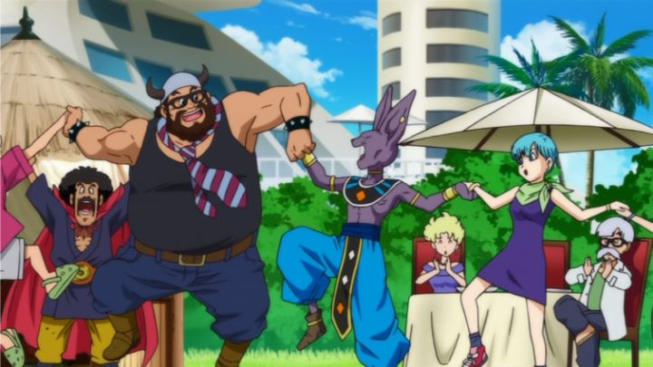

"Dragon Ball Z" is arguably a "classic" of the 1990's. It seemed like every kid from that generation grew up watching it. The franchise reiterated itself a few times in the decades that followed, but only recently has it been truely revitalized with a new slew of successful movies and a new HD television series. This all started in 2013 with the release of "Dragon Ball Z - Battle of Gods," a blockbuster theatrical event with a new original story written by the original manga author. I didn't fully realize the power of the show until I bought I ticket to see "Battle of Gods" in theaters (dubbed and released by Funimation) in my small Canadian town. I'd been to a few big and small theatrical anime screenings, and in my town, the theater would usually be empty. For "Battle of Gods," it was a full house. You couldn't get a seat: some fans sat on the stairs, and didn't seem to mind. The entire audience was in their mid-20's, mostly male, cheering every time a character appeared on screen. Yep, these are my people."Battle of Gods" may sound like an epic title, but the movie is fairly low-key in its story. Granted, "Dragon Ball Z" was never really known for its "story," but this movie leans heavily into comedy for the first two-thirds of the runtime. It opens with Beerus, a new character (a purple Egpytian-dog-like alien with the power of a God) waking up from a long slumber, learning about the mighty alien warrior Goku on Earth, and flying across space with his assistant to meet him. It happens to be Bulma's birthday, and the entire gang of familiar characters is enjoying a party: now accustomed to aliens of all kinds, they treat Beerus as an uninvited but welcome guest, letting him feast on some of Earth's delicious human food. Eventually, after a misunderstanding over a lack of pudding, Beerus makes his intent known, threatening to destroy the planet if Goku can't beat him. With no time to prepare, Goku and his friends are forced to do their best against this new God, with Goku even transforming into a blue-haired form that could only be called "Super Saiyan God." The word "God" is used a lot in this movie.Effectively, the stakes feel low and inconsequential. Even when Beerus threatens the world, it doesn't seem entirely out of malice; he's a perfectly reasonable God if not provoked. Most of "Dragon Ball"'s past films at least pretended to matter. This really is better thought of as a light-hearted comedy and reuinion of old friends in glorious HD. In that spirit, the jokes and hijinks are good fun, especially when serious characters like Picolo or Vegeta are forced to act silly. It's also best suited for watching with a crowd of fans familiar with the characters, to get the best experience. That's not to say the movie is entirely meaningless. In the films and media to follow, Beerus becomes a regular character, despite being newly added nearly two decades after the original "Z" series ended broadcast. So does Goku's new blue-haired "God" form, along side forms like "Super Saiyan" and "Super Saiyan 3." It's as if the warm reception of this movie gave the creators permission to effectively continue the "Z" storyline, adding many new elements in the years to follow. As the start of a new era, it has value, and if nothing else, is harmless fun to watch with the right demographic (also, relatively family-friendly). Visually, the movie looks... fine. Which is to say it looks far better than "Dragon Ball Z" ever looked; the show and old movies have not aged well at all, and even Akira Toriyama's iconic character designs always looked a bit strange to me. In "Battle of Gods," the camera moves around... badly modeled 3D environments, and character animation is... generally stiff and over-expressive for the sake of jokes. But it's also pleasently colorful, and in HD, looks reasonably pleasant. The big highlight comes in the big battle scene between Goku and Beerus in the final act, where the two punch each other through mountains and ground. Much of it is animated with 3D models, an unfortunate shortcut, but the camera movement and high-octane action is so dynamic that I didn't really mind. If the rest of the movie had an excuse to look as good as that scene, it might have been enough to recommend the film to animation fans who have never heard of the franchise.Background tracks are appropriately silly or serious for any given scene. The English dub gives it their all. While technically not THE original dub actors I probably grew up with on TV, Funimation's dub has become the standard for the home video release ever since, and their actors are iconic in their roles. I suspect even old fans will forget the original voices, and hearing them in this movie on the big screen does bring a tear to my eye, with a giddy smile across my face. Subtle acting might not be present, but that's not the point in "Dragon Ball Z," and I'd dare anyone to insist to watch this subbed only. "Dragon Ball Z - Battle of Gods" isn't a particularly important movie... at least, not in the ways one would expect. But it's insistance on sticking with comedy almost makes it a breath of fresh air, and it's a delight to simply see these character again. For most people, it and the entirety of the films and series to follow are absolutely skippable. If you grew up with the original series, and are interested in getting back into it (or maybe wanting to introduce it to your own children), "Battle of Gods" is a great love letter saying "Hey! Long time no see! We haven't changed much, but it's great to see you again!" If you are interested in getting into the series for the first time, but don't know where to start in the massive chronology, this movie is as good a place as any, and allows you to enjoy the rest of the new movies, plus the new series "Dragon Ball Super," all animated with modern production values. But if ever given the chance again, do try to watch it in a theater or with an anime club. When Goku slowly screams out his iconic final attack, having a hundred fans scream it in unison is something special only anime fans can experience.
- "Ani" More reviews can be found at : https://2danicritic.github.io/ Previous review: review_Dragon_Ball_Super_-_Broly Next review: review_Drifters